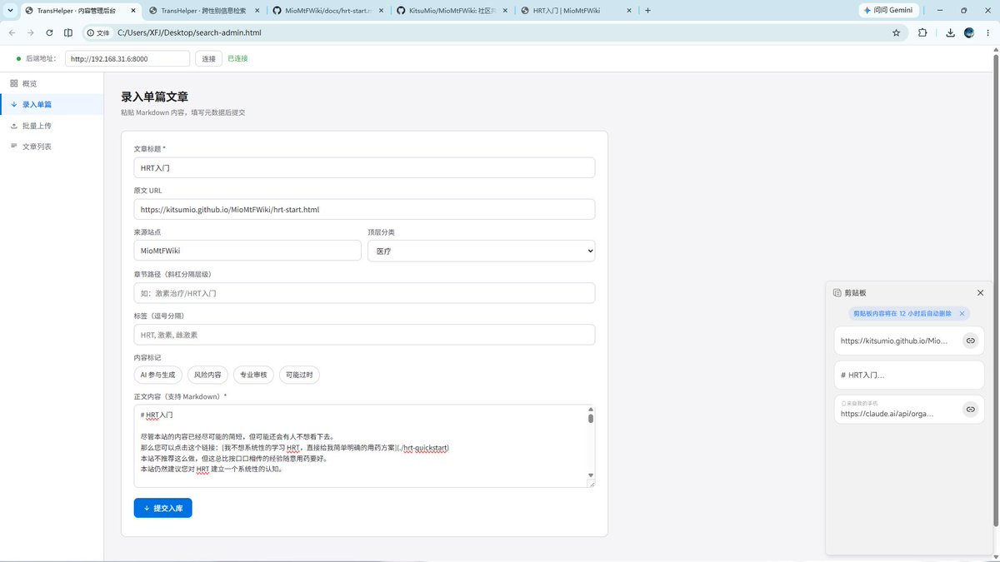

如果你需要更加精确的搜索，我建议使用
https://t.co/tmxx5DTtCb
导航站，Trans-Search 提供的是较全面的语义搜索方向，这与
https://t.co/tmxx5DTtCb
导航站的工作并不相同，且
https://t.co/tmxx5DTtCb
导航站是一个成熟的项目，Trans-Search 仍在发展中，甚至还未上线（）


还需要注意的是，前端目前是 AI 开发，待后端部署完毕后泠云会人工重新开发，且测试环境，不代表实际效果
Qdrant：https://t.co/AdyEWkRRaO
MioMtFWiki：https://t.co/Muj1H9dRHX…
MtFWiki：https://t.co/J8PFT5fFL8…
* 配图为录入 MioMtFWiki 的文章 “HRT 入门”，共生成了 13 个向量块 https://t.co/uE3evCBLEa
Qdrant：https://t.co/AdyEWkRRaO
MioMtFWiki：https://t.co/Muj1H9dRHX…
MtFWiki：https://t.co/J8PFT5fFL8…
* 配图为录入 MioMtFWiki 的文章 “HRT 入门”，共生成了 13 个向量块 https://t.co/uE3evCBLEa